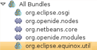
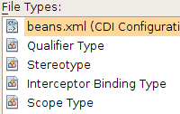
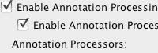
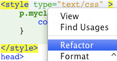
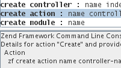
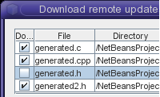
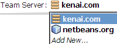

NetBeans IDE 6.9.1 Release Information
The NetBeans IDE is an award-winning integrated development
environment available for Windows, Mac, Linux, and Solaris. The NetBeans
project consists of an open-source IDE
and an application platform
that enable developers to rapidly create
web, enterprise, desktop, and mobile applications using the Java
platform, as well as JavaFX, PHP, JavaScript and Ajax, Ruby and Ruby on Rails,
Groovy and Grails, and C/C++.
The NetBeans project is supported by a vibrant
developer community and
offers extensive documentation and training
resources as well as a diverse selection of third-party
plugins.
Release Overview
NetBeans IDE 6.9 introduces the JavaFX Composer, a visual layout tool for
visually building JavaFX GUI applications, similar to the Swing GUI builder
for Java SE applications.
Additional highlights include OSGi interoperability for NetBeans Platform applications
and support for developing OSGi bundles with Maven;
support for JavaFX SDK, PHP Zend framework, and Ruby on Rails 3.0;
as well as improvements to the Java Editor, Java Debugger, issue tracking, and more.
Get the NetBeans IDE 6.9.1
The latest available download is NetBeans IDE 6.9.1, which is an update to NetBeans IDE 6.9.

NetBeans IDE 6.9.1 includes the following notable changes:
Documentation
Use the following documents to get started with NetBeans IDE 6.9.1:
Feature Highlights
|
OSGi
- Develop OSGi bundles with Maven
- Bundled Felix container
- Use OSGi bundles in a NetBeans RCP application
NetBeans Platform
- OSGi interoperability (developing and consuming OSGi bundles in
Platform-based applications)
- Felix 2.0.3 OSGi support, experimental Equinox support
- Convert NetBeans modules into OSGi bundles and run them in an
unmodified OSGi container
- Branding Editor for both Ant and Maven Platform-based projects
- NetBeans Platform-based applications generate installers for
most common operating systems
- Enhanced support for consuming web services and connecting to databases
|


|
|
JavaFX
- JavaFX Composer for form-like UI components with states and access to various data sources
- Added and improved editor hints, debugging, and refactoring
- Enhanced Palettes for JavaFX Shapes, Colors, Effects, and Charts
- Improved code formatting
|

|
|
Java EE
- Support for Contexts and Dependency Injection (CDI) (JSR-299)
- Spring Framework 3.0 support
- Bundled GlassFish Server Open Source Edition 3.0.1
- Easy regeneration of JPA entities after database change
- REST web services support for RCP applications
|

|
|
Java
- Java Debugger breakpoint grouping, debugger attach parameter history
- Support for annotation processors in the editor, configurable in the Project Properties
- New Applet and Web Start (JNLP) support
- Improved navigation in Stack Trace Analyzer and URLs, Go To Overridden/Implemented Method action
Web Languages: HTML, CSS, JavaScript
- Refactoring and find usages for CSS and HTML-like languages
- Code completion and hyperlinking for id and class selector attributes
- Refactoring inline CSS styles
|


|
|
Java Card
- Support for creating Java Card Connected 3 servlets, classic and extended applets
- Backward compatibility with Java Card 2.2.x and Java Card Classic
- Debugging, and multiple Java Card Platform/Device creation
- Alignment with Java Card Reference Implementation
|

|
|
PHP
- PHP Zend Framework support
- "Overrides/Implements" and "Is Overridden/Implemented" annotations
- New formatter with many formatting rules
Ruby
- Ruby on Rails 3.0 support
|

|
|
C/C++
- Unit test integration with C/C++ projects
- Enhanced remote development including remote file download and browsing
- Improved support of makefile targets and Fortran
- Improved hyperlink navigation between overridden methods and classes
|

|
|
General
- Many more editor hints for Java and Ruby
- Spell checker support in the Editor
- Help menu item for reporting bugs and slowness against NetBeans IDE
- Support for multiple Kenai-based team servers (e.g. kenai.com and netbeans.org).
|

|
Learn more about the features of this release at the
NetBeans
IDE New and Noteworthy page!
Visit the NetBeans release roadmap.